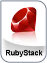

|

We created the BitNami Project to help spread the adoption of freely
available, high quality Open Source web applications. BitNami aims to make
it easier than ever to discover, download and install Open Source software such
as document and content management systems, wikis and blogging software.
You can learn more about BitNami at http://bitnami.org
The BitNami RubyStack is an easy to install
software platform that greatly simplifies the deployment of Open Source web
stacks. It includes ready-to-run versions of
Ruby On Rails, Apache, MySQL, PHP, Subversion and phpMyAdmin. BitNami RubyStack is
distributed for free under the Apache 2.0 license.
You can learn more about rubystack at http://www.rubyonrails.org
Check out our complete list of modules you can add to the BitNami RubyStack at http://www.bitnami.org/stacks. This way you can get almost any web application you want up and running in less than 5 minutes.
You can access the built-in management tool phpMyAdmin here. For security reasons it is password protected and only accessible when using 127.0.0.1 as the hostname.
You can access the Ruby On Rails sample application here. |